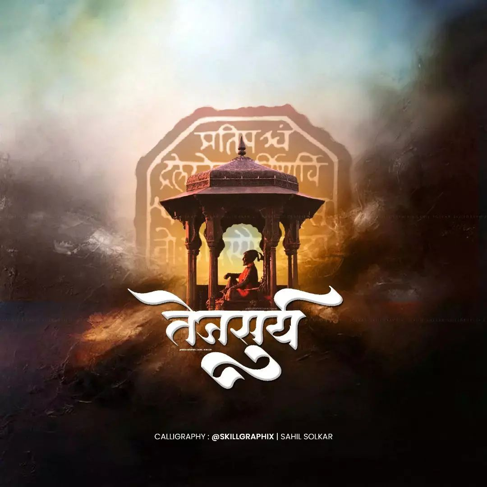
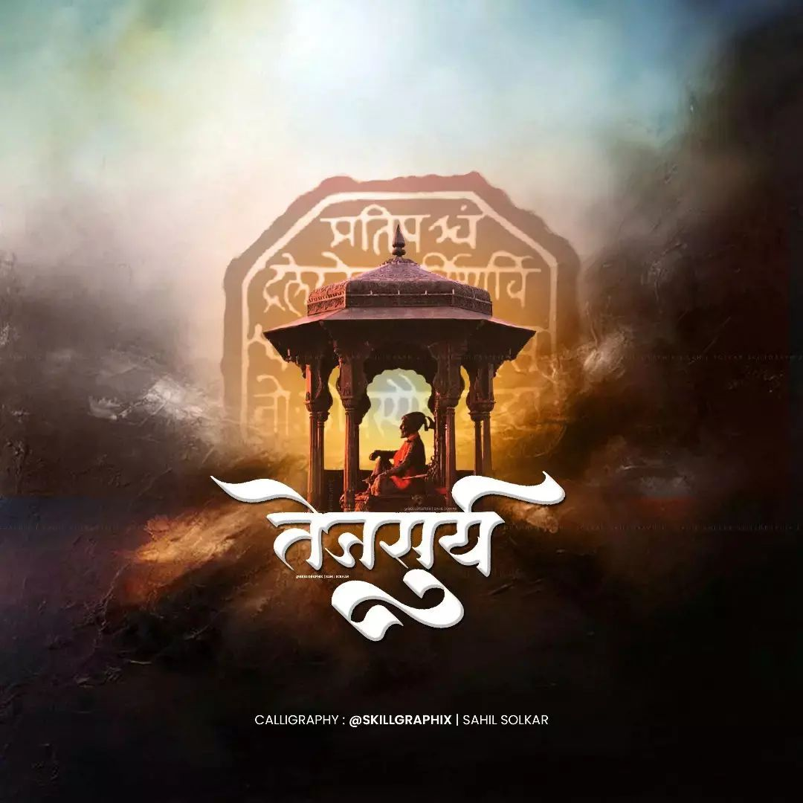

Java is a programming language and a platform. Java is a high level, robust, object-oriented and secure programming language. Java was developed by Sun Microsystems (which is now the subsidiary of Oracle) in the year 1995. James Gosling is known as the father of Java. Before Java, its name was Oak. Since Oak was already a registered company, so James Gosling and his team changed the name from Oak to Java. Platform: Any hardware or software environment in which a program runs, is known as a platform. Since Java has a runtime environment (JRE) and API, it is called a platform